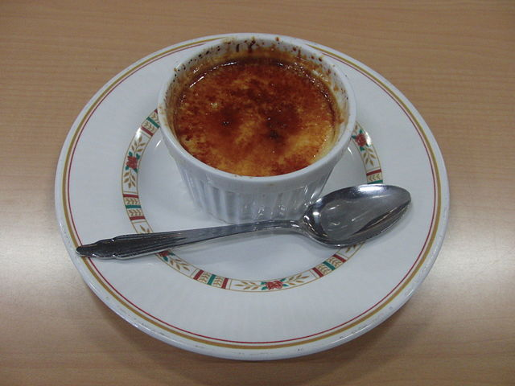

Flan

Description
A creamy caramel custard dessert. Made by baking a sweetened
egg and milk mixture over a caramelized sugar layer.
Ingredients
- 2 cups whole milk
- 3 eggs
- 1 cup sugar
- 1 lemon peel
- 1 cinnamon stick
Steps
- Preheat your oven to 350°F (175°C).
- Heat the milk with the lemon peel and cinnamon stick. When it starts to boil, remove from the heat and leave to infuse while it cools for 30 minutes.
- Mix the eggs with the sugar, stirring gently without beating. Add the milk and stir gently until the sugar has dissolved. Strain the mixture through a fine sieve.
- Fill the molds with the mixture, carefully and slowly so as not to incorporate air, and place them in an oven dish filled with a small amount of water and place in the oven, with the heat turned up and down.
- Bake for 25-30 minutes or until a needle inserted into the flan comes out dry. Remove the moulds from the oven. Wait for them to cool before putting them in the fridge and leaving them to rest for 24 hours.
Try to put a layer of sugar on top and burn it for a crunchy and sweet touch.